Mobile App Architecture
เอกสารฉบับนี้อธิบายรายละเอียดการออกแบบโมบายแอปพลิเคชันสำหรับผู้ใช้งานทั่วไปที่ต้องการตรวจสอบความน่าเชื่อถือของรูปภาพก่อนนำไปเชื่อถือ แชร์ หรือใช้ประกอบการตัดสินใจ โดยระบบเน้นการนำเข้ารูปภาพ วิเคราะห์ความเสี่ยงจากหลายแหล่งข้อมูล แล…
การออกแบบโมบายแอปพลิเคชัน (Mobile Application Design)
โครงการ: แอปตรวจสอบรูปภาพตัดต่อที่ถูกนำมาหลอกลวง (Scam Image Detection)
เอกสารฉบับนี้อธิบายรายละเอียดการออกแบบโมบายแอปพลิเคชันสำหรับผู้ใช้งานทั่วไปที่ต้องการตรวจสอบความน่าเชื่อถือของรูปภาพก่อนนำไปเชื่อถือ แชร์ หรือใช้ประกอบการตัดสินใจ โดยระบบเน้นการนำเข้ารูปภาพ วิเคราะห์ความเสี่ยงจากหลายแหล่งข้อมูล และแสดงผลลัพธ์ในรูปแบบที่เข้าใจง่าย เหมาะสำหรับการพัฒนาด้วย Flutter และเชื่อมต่อกับบริการ Backend/API ของระบบ Scam Image Detection
1. เป้าหมายของโมบายแอป
โมบายแอปทำหน้าที่เป็นส่วนติดต่อหลักระหว่างผู้ใช้งานกับระบบวิเคราะห์รูปภาพ โดยมีเป้าหมายดังนี้
- ให้ผู้ใช้งานอัปโหลดไฟล์รูปภาพจากอุปกรณ์ได้อย่างรวดเร็ว
- ส่งรูปภาพเข้าสู่ระบบวิเคราะห์ Scam Image Detection ผ่าน API
- แสดงผลการวิเคราะห์เป็นระดับความเสี่ยงที่เข้าใจง่าย
- แสดงรายละเอียดผลวิเคราะห์แบบแยกชั้น เช่น OCR, Metadata, Reverse Image Search, Visual Anomaly และ AI-generated Detection
- แสดงภาพประกอบการอธิบาย เช่น Heatmap หรือบริเวณที่ระบบตรวจพบความผิดปกติ
- จัดเก็บประวัติการสแกนเพื่อให้ผู้ใช้งานย้อนดูผลลัพธ์ได้
- รองรับการรายงานรูปภาพต้องสงสัยเข้าสู่ฐานข้อมูลกลาง
- คุ้มครองข้อมูลส่วนบุคคลตามแนวทาง PDPA โดยให้ผู้ใช้ควบคุมการยินยอมได้
2. กลุ่มผู้ใช้งานเป้าหมาย
2.1 ผู้ใช้งานทั่วไป
ผู้ใช้งานที่พบรูปภาพจากสื่อสังคมออนไลน์ แชต Marketplace หรือประกาศต่าง ๆ และต้องการตรวจสอบก่อนเชื่อถือหรือตัดสินใจโอนเงิน
ลักษณะการใช้งานหลัก:
- ตรวจสอบรูปโปรไฟล์ รูปสินค้า สลิปโอนเงิน หรือภาพประกาศ
- ต้องการผลลัพธ์ที่อ่านง่าย ไม่ซับซ้อน
- ต้องการคำแนะนำว่าควรเชื่อถือภาพนั้นหรือไม่
2.2 ผู้ใช้งานที่เคยถูกหลอกลวง
ผู้ใช้งานที่ต้องการรายงานรูปภาพหรือหลักฐานที่เกี่ยวข้องกับการหลอกลวง
ลักษณะการใช้งานหลัก:
- ส่งรายงานรูปภาพต้องสงสัย
- เพิ่มคำอธิบายหรือบริบทของเหตุการณ์
- อนุญาตให้ระบบใช้รูปภาพเป็นข้อมูลอ้างอิงหรือข้อมูลวิจัย
2.3 ผู้ดูแลระบบหรือทีมวิจัย
ใช้งานข้อมูลที่ผู้ใช้รายงานเข้ามาเพื่อปรับปรุงฐานข้อมูลและโมเดลตรวจจับ
ลักษณะการใช้งานหลัก:
- ตรวจสอบรายงานจากผู้ใช้
- วิเคราะห์กรณีภาพหลอกลวงใหม่
- ใช้ข้อมูลที่ได้รับความยินยอมสำหรับปรับปรุงโมเดล
3. ขอบเขตของโมบายแอป
3.1 ฟังก์ชันที่อยู่ในขอบเขต
- สมัครสมาชิกและเข้าสู่ระบบ
- เข้าสู่ระบบด้วย Email/Password (Google/Apple OAuth เป็น Phase 2)
- อัปโหลดไฟล์รูปภาพจากอุปกรณ์
- Crop หรือปรับขอบเขตรูปก่อนส่งวิเคราะห์
- อัปโหลดรูปภาพไปยัง Backend API
- แสดงสถานะการวิเคราะห์แบบกำลังประมวลผล
- แสดงคะแนนความเสี่ยงรวม
- แสดงรายละเอียดการวิเคราะห์แต่ละชั้น
- แสดง Heatmap หรือภาพประกอบผลลัพธ์
- บันทึกประวัติการสแกน
- ค้นหาและกรองประวัติการสแกน
- รายงานภาพต้องสงสัย
- แชร์ผลการแจ้งเตือนในรูปแบบภาพหรือข้อความ
- จัดการโปรไฟล์และความยินยอมด้านข้อมูลส่วนบุคคล
3.2 ฟังก์ชันที่อยู่นอกขอบเขตระยะแรก
- ระบบแชตภายในแอป
- ระบบตรวจสอบวิดีโอ
- การวิเคราะห์แบบออฟไลน์เต็มรูปแบบบนเครื่องผู้ใช้
- Dashboard สำหรับผู้ดูแลระบบภายในโมบายแอป
- การแจ้งความหรือส่งข้อมูลต่อหน่วยงานรัฐโดยตรง
4. สถาปัตยกรรมของแอป
โมบายแอปออกแบบด้วยแนวคิด Clean Architecture เพื่อแยกส่วนแสดงผล ธุรกิจ และแหล่งข้อมูลออกจากกัน ลดการผูกติดกับ Framework และทำให้ทดสอบง่าย

ดู Mermaid source
flowchart TD
UI[Presentation Layer<br>Flutter Widgets and Screens]
State[BLoC / Cubit<br>State Management]
Domain[Domain Layer<br>Entities and Use Cases]
Repo[Repository Interfaces]
Data[Data Layer<br>Repository Implementations]
Remote[Remote Data Source<br>REST API via Dio]
Local[Local Data Source<br>Secure Storage / Cache]
UI --> State
State --> Domain
Domain --> Repo
Repo --> Data
Data --> Remote
Data --> Local
4.1 Presentation Layer
รับผิดชอบหน้าจอและ Widget ทั้งหมด เช่น Home, Scan, Result, History และ Settings โดยไม่เขียน Business Logic โดยตรงใน Widget
องค์ประกอบหลัก:
- Screens
- Reusable Widgets
- Form Components
- Navigation
- Loading, Empty, Error State
- Theme และ Design Tokens
4.2 State Management Layer
ใช้ BLoC หรือ Cubit สำหรับควบคุมสถานะของหน้าจอและกระบวนการทำงาน เช่น เลือกไฟล์รูป อัปโหลด วิเคราะห์ และแสดงผล
ตัวอย่าง BLoC/Cubit:
AuthBlocScanBlocImageUploadCubitAnalysisResultBlocHistoryBlocReportBlocConsentCubitSettingsBloc
4.3 Domain Layer
เป็นแกนกลางของตรรกะระบบ ไม่ขึ้นกับ Flutter หรือ API โดยตรง
ตัวอย่าง Use Case:
LoginUseCaseSelectImageFileUseCaseSubmitImageForAnalysisUseCaseGetAnalysisResultUseCaseGetScanHistoryUseCaseDeleteScanHistoryUseCaseSubmitScamReportUseCaseUpdateConsentUseCase
ตัวอย่าง Entity:
UserScanImageAnalysisTaskAnalysisResultRiskScoreRiskFactorScanHistoryItemScamReportConsentSetting
4.4 Data Layer
รับผิดชอบการเชื่อมต่อ API, Mapping ข้อมูล JSON เป็น Model, จัดเก็บ Token และ Cache ข้อมูลที่จำเป็น
องค์ประกอบหลัก:
AuthRepositoryImplScanRepositoryImplHistoryRepositoryImplReportRepositoryImplAuthRemoteDataSourceScanRemoteDataSourceSecureStorageDataSourceLocalCacheDataSource
5. โครงสร้างโฟลเดอร์ที่แนะนำ
ภาษา textlib/
core/
constants/
errors/
network/
router/
storage/
theme/
utils/
widgets/
features/
auth/
data/
domain/
presentation/
scan/
data/
domain/
presentation/
result/
data/
domain/
presentation/
history/
data/
domain/
presentation/
report/
data/
domain/
presentation/
settings/
data/
domain/
presentation/
แนวทางการตั้งชื่อ:
- ไฟล์ใช้
snake_case - Class ใช้
PascalCase - ตัวแปรและเมธอดใช้
camelCase - แยก Widget ย่อยเมื่อหน้าจอเริ่มซับซ้อน
- หลีกเลี่ยงการเรียก API โดยตรงจาก Widget
6. Navigation และ App Flow
ระบบนำทางใช้ Bottom Navigation สำหรับหน้าหลัก และใช้ Stack Navigation สำหรับรายละเอียดหรือขั้นตอนย่อย

ดู Mermaid source
flowchart TD
Splash[Splash Screen]
Onboarding[Onboarding / Consent Intro]
Login[Login Screen]
Register[Register Screen]
Main[Main Shell with Bottom Navigation]
Home[Home / Scan Screen]
History[History Screen]
Settings[Settings Screen]
Crop[Image Crop Screen]
Loading[Analysis Loading Screen]
Result[Analysis Result Screen]
Report[Report Scam Screen]
Detail[History Detail Screen]
Splash --> Onboarding
Splash --> Login
Splash --> Main
Onboarding --> Login
Login --> Register
Register --> Main
Login --> Main
Main --> Home
Main --> History
Main --> Settings
Home --> Crop
Crop --> Loading
Loading --> Result
Result --> Report
History --> Detail
Detail --> Result
6.1 Bottom Navigation
รายการเมนูหลัก (4 tabs):
- หน้าหลัก (home)
- ประวัติ (history)
- แจ้งรายงาน (report/flag)
- ตั้งค่า (settings)
หลักการใช้งาน:
- หน้าสแกนเป็นหน้าเริ่มต้นหลังเข้าสู่ระบบ
- ผู้ใช้สามารถกลับมาสแกนใหม่ได้ภายใน 1 Tap
- หน้าประวัติแยกจากผลลัพธ์ล่าสุดเพื่อลดความสับสน
- หน้าตั้งค่าเก็บเฉพาะเรื่องบัญชี ความเป็นส่วนตัว และระบบ
7. รายละเอียดหน้าจอ
7.1 Splash Screen
หน้าจอเริ่มต้นสำหรับโหลดค่าระบบ ตรวจสอบ Token และตรวจสอบสถานะ Consent
องค์ประกอบ UI:
- โลโก้แอป
- ชื่อระบบ Scam Image Detection
- Loading Indicator
- ข้อความสถานะสั้น ๆ เช่น กำลังเตรียมระบบ
Logic:
- ตรวจสอบว่ามี Access Token ใน Secure Storage หรือไม่
- หาก Token ยังไม่หมดอายุ ไปหน้า Main
- หาก Token หมดอายุ ให้ลอง Refresh Token
- หากไม่มี Token ไปหน้า Login
- หากผู้ใช้ยังไม่ยอมรับเงื่อนไข ไปหน้า Onboarding/Consent
State:
initialcheckingSessionauthenticatedunauthenticatedconsentRequiredfailure
7.2 Onboarding และ Consent Intro
หน้าจออธิบายวัตถุประสงค์การใช้งานและการใช้ข้อมูลรูปภาพ
องค์ประกอบ UI:
- ข้อความอธิบายว่าแอปช่วยตรวจสอบภาพต้องสงสัย
- ข้อความแจ้งว่าผลวิเคราะห์เป็นการประเมินความเสี่ยง ไม่ใช่คำตัดสินทางกฎหมาย
- Checkbox สำหรับยอมรับเงื่อนไขการใช้งาน
- Checkbox แยกสำหรับยินยอมให้นำข้อมูลไปใช้ปรับปรุงโมเดล
- ปุ่มดำเนินการต่อ
Validation:
- ต้องยอมรับเงื่อนไขการใช้งานก่อนเข้าใช้งาน
- Consent เพื่อการวิจัยต้องเป็นแบบสมัครใจ ไม่บังคับ
7.3 Login Screen
หน้าจอเข้าสู่ระบบสำหรับผู้ใช้เดิม
องค์ประกอบ UI:
-
ช่อง Email
-
ช่อง Password พร้อมปุ่มแสดงหรือซ่อนรหัสผ่าน
-
ปุ่มเข้าสู่ระบบ
-
ปุ่มเข้าสู่ระบบด้วย Google (Phase 2)
-
ลิงก์สมัครสมาชิก
-
ลิงก์ลืมรหัสผ่าน
Validation:
- Email ต้องอยู่ในรูปแบบถูกต้อง
- Password ต้องไม่ว่าง
- แสดง Error ใต้ช่องที่ผิดพลาด
- ปิดปุ่มเข้าสู่ระบบระหว่างส่งคำขอ
Error State:
- Email หรือ Password ไม่ถูกต้อง
- บัญชีถูกระงับ
- ไม่มีอินเทอร์เน็ต
- Server ไม่ตอบสนอง
7.4 Register Screen
หน้าจอสมัครสมาชิกใหม่
องค์ประกอบ UI:
- ชื่อที่แสดง
- Password
- Confirm Password
- Checkbox ยอมรับเงื่อนไข
- ปุ่มสมัครสมาชิก
Validation:
- Email ต้องถูกต้อง
- Password อย่างน้อย 8 ตัวอักษร
- Password และ Confirm Password ต้องตรงกัน
- ต้องยอมรับเงื่อนไขก่อนสมัคร
7.5 Home / Scan Screen
หน้าหลักสำหรับเริ่มการตรวจสอบรูปภาพ
องค์ประกอบ UI:
- Header แสดงชื่อผู้ใช้หรือข้อความทักทาย
- Card แสดงปุ่มอัปโหลดรูปหลัก
- ปุ่มอัปโหลดไฟล์รูปภาพจากอุปกรณ์
- แถบคำแนะนำความปลอดภัย
- รายการ Scam Alert ล่าสุด
- Shortcut ไปยังประวัติการสแกนล่าสุด
พฤติกรรม:
- เมื่อกดอัปโหลดรูป เปิด File Picker สำหรับเลือกไฟล์รูปภาพ
- เมื่อได้รูปแล้วไปหน้า Crop
- หากผู้ใช้ปฏิเสธสิทธิ์เข้าถึงรูปภาพหรือไฟล์ ให้แสดงคำอธิบายและปุ่มเปิด Settings
ข้อจำกัดไฟล์:
- รองรับ jpg, jpeg, png, webp
- ขนาดไฟล์: mobile ตรวจก่อนอัปโหลด ≤10MB / server ปฏิเสธเกิน 20MB
- จำกัดภาพสูงสุด 100M พิกเซลฝั่ง server
- หากไฟล์ใหญ่เกิน ให้บีบอัดก่อนอัปโหลดโดยยังรักษาความชัดพอสำหรับ OCR
7.6 Image Preview และ Crop Screen
หน้าจอสำหรับตรวจสอบรูปก่อนส่งวิเคราะห์
องค์ประกอบ UI:
- แสดงรูปเต็ม
- เครื่องมือ Crop
- ปุ่มหมุนภาพ
- ปุ่มเปลี่ยนรูป
- ปุ่มเริ่มวิเคราะห์
- ข้อความแจ้งว่ารูปจะถูกส่งไปประมวลผลบนระบบ Backend
พฤติกรรม:
- ผู้ใช้สามารถ Crop เฉพาะบริเวณสลิป ข้อความ หรือรูปโปรไฟล์
- แอปบันทึกเฉพาะภาพที่ผ่านการยืนยันเพื่อส่ง API
- หากกดกลับ ให้ถามก่อนยกเลิกเมื่อมีการแก้ไขรูปแล้ว
7.7 Analysis Loading Screen
หน้าจอระหว่างรอผลการวิเคราะห์
องค์ประกอบ UI:
- Progress Indicator
- ข้อความสถานะ เช่น กำลังอ่านข้อความในภาพ, กำลังตรวจสอบแหล่งที่มา, กำลังวิเคราะห์ความผิดปกติ
- Stepper แสดง 3 ขั้นหลัก
- ปุ่มย่อไปทำอย่างอื่น เฉพาะกรณีรองรับ Background Task
Logic:
- หลังอัปโหลดสำเร็จ Backend ส่ง
scanId - แอป Polling สถานะงานทุก 3 วินาที (canonical; อยู่ในกรอบ 2–5 วินาที) จนได้ผลหรือ Timeout 120 วินาที หรือใช้ Push Notification เมื่อพร้อม (FCM = Phase 2)
- หากใช้ Polling ต้องมี Timeout
- หากผู้ใช้ออกจากหน้า ให้บันทึก Task ที่ยังประมวลผลไว้และแจ้งเตือนเมื่อเสร็จ
State:
uploadingqueuedprocessingTextprocessingSourceprocessingVisualcompletedfailedtimeout
7.8 Analysis Result Screen
หน้าจอแสดงผลลัพธ์การวิเคราะห์ภาพ
องค์ประกอบ UI:
- รูปภาพที่ตรวจสอบ
- คะแนนความเสี่ยงรวม
- ป้ายระดับความเสี่ยง
- คำสรุปผลแบบภาษาคนทั่วไป
- Tab หรือ Section สำหรับรายละเอียดแต่ละชั้น
- ปุ่มดู Heatmap
- ปุ่มบันทึกผล
- ปุ่มแชร์คำเตือน
- ปุ่มรายงานภาพต้องสงสัย
ระดับความเสี่ยง:
| ช่วงคะแนน | ระดับ | สี | ความหมาย |
|---|---|---|---|
| 0-39 | ต่ำ | เขียว | ไม่พบสัญญาณหลอกลวงชัดเจน หรือมีสัญญาณอ่อนบางจุดแต่ยังไม่น่ากังวล |
| 40-69 | ปานกลาง | เหลือง | พบสัญญาณบางส่วน ควรตรวจสอบเพิ่ม |
| 70-100 | สูง | แดง | พบหลายสัญญาณที่เกี่ยวข้องกับการหลอกลวง (กรณี $S_{visual} \ge 80$ → สูงทันที) |
ข้อความสรุปควรหลีกเลี่ยงการฟันธงเกินจริง เช่น ไม่ควรใช้คำว่า เป็นของปลอมแน่นอน แต่ควรใช้คำว่า มีความเสี่ยงสูง หรือ พบสัญญาณที่ควรระวัง
7.9 Result Detail: Textual Analysis
แสดงผลจาก OCR และการวิเคราะห์ข้อความ
ข้อมูลที่แสดง:
- ข้อความที่ OCR อ่านได้
- คำหรือวลีที่เข้าข่ายหลอกลวง
- ประเภทคำเตือน เช่น เร่งให้โอนเงิน, รับประกันกำไร, ขอข้อมูลส่วนตัว
- คะแนนย่อยของ Textual Risk
ตัวอย่างคำเตือน:
- พบคำที่สื่อถึงการเร่งตัดสินใจ
- พบข้อความชักชวนให้โอนเงิน
- พบข้อมูลบัญชีหรือช่องทางติดต่อในภาพ
- OCR อ่านข้อความได้บางส่วน อาจต้องตรวจสอบด้วยตนเอง
7.10 Result Detail: Source Verification
แสดงข้อมูลจากการตรวจสอบแหล่งที่มาของภาพ
ข้อมูลที่แสดง:
- พบภาพใกล้เคียงจากแหล่งอื่นหรือไม่
- วันที่พบภาพในแหล่งอื่นครั้งแรก หากมี
- Domain หรือแหล่งอ้างอิงที่เกี่ยวข้อง
- ความคล้ายของภาพ
- ข้อสรุปว่าเป็นภาพที่อาจถูกนำกลับมาใช้ใหม่หรือไม่
ข้อควรระวัง:
- หากไม่พบผลลัพธ์ ไม่ได้แปลว่าภาพปลอดภัย
- หากพบภาพเดียวกันในหลายบริบท ต้องแจ้งให้ผู้ใช้ตรวจสอบแหล่งที่มา
7.11 Result Detail: Visual Anomaly
แสดงผลจากการตรวจจับความผิดปกติของภาพ เช่น การตัดต่อหรือภาพสร้างด้วย AI
ข้อมูลที่แสดง:
- คะแนน Visual Anomaly
- คะแนน AI-generated Probability
- จุดที่ระบบให้ความสนใจบนภาพ
- Heatmap จาก Heatmap หรือ XAI
- ข้อสรุปเชิงอธิบาย
ตัวอย่างข้อความ:
- พบความไม่สม่ำเสมอของพื้นผิวภาพบริเวณใบหน้า
- พบสัญญาณการบีบอัดภาพต่างระดับในบางบริเวณ
- โมเดลประเมินว่ามีโอกาสเป็นภาพสร้างด้วย AI ในระดับปานกลาง
7.12 Heatmap Viewer
หน้าจอหรือ Modal สำหรับดูภาพ Heatmap แบบละเอียด
องค์ประกอบ UI:
- Toggle ระหว่าง Original และ Heatmap
- Slider ปรับความโปร่งใสของ Heatmap
- Zoom และ Pan
- ปุ่มดาวน์โหลดหรือบันทึกภาพประกอบผลลัพธ์
- คำอธิบายสั้น ๆ ว่าสีร้อนหมายถึงบริเวณที่โมเดลให้ความสำคัญ
7.13 History Screen
หน้าประวัติการตรวจสอบรูปภาพ
องค์ประกอบ UI:
- Search Bar
- Filter ตามระดับความเสี่ยง
- Filter ตามวันที่
- รายการประวัติแบบ List
- Thumbnail รูปภาพ
- วันที่สแกน
- คะแนนความเสี่ยง
- สถานะงาน เช่น เสร็จแล้ว, ล้มเหลว, กำลังประมวลผล
พฤติกรรม:
- แตะรายการเพื่อดูรายละเอียด
- Swipe เพื่อลบรายการ
- Pull to Refresh
- Empty State เมื่อยังไม่มีประวัติ
- Error State เมื่อโหลดข้อมูลไม่ได้
7.14 History Detail Screen
แสดงรายละเอียดผลวิเคราะห์ย้อนหลัง โดยใช้โครงสร้างเดียวกับ Analysis Result Screen
ข้อกำหนด:
- หากภาพต้นฉบับถูกลบตามนโยบาย Privacy ต้องแสดงเฉพาะ Metadata และผลคะแนนที่ยังคงเก็บได้
- หากผลลัพธ์หมดอายุหรือถูกลบจาก Server ต้องแจ้งผู้ใช้ชัดเจน
- ควรมีปุ่มสแกนภาพใหม่ถ้าผู้ใช้ยังมีไฟล์อยู่ในเครื่อง
7.15 Report Scam Screen
หน้าจอสำหรับรายงานภาพต้องสงสัยเข้าสู่ฐานข้อมูลกลาง
องค์ประกอบ UI:
- รูปภาพที่ต้องการรายงาน
- ประเภทเหตุการณ์
- ช่องกรอกรายละเอียด
- ช่องระบุแพลตฟอร์มที่พบ เช่น Facebook, LINE, Instagram, Marketplace, Website
- ช่องแนบข้อมูลเสริม เช่น ลิงก์หรือชื่อบัญชีผู้ต้องสงสัย
- Checkbox ยินยอมให้ใช้ข้อมูลเพื่อปรับปรุงระบบ
- ปุ่มส่งรายงาน
ประเภทเหตุการณ์:
- Romance Scam
- ซื้อขายออนไลน์
- สลิปปลอม
- ลงทุนหรือผลตอบแทนสูง
- ปลอมแปลงตัวตน
- ภาพ AI หรือ Deepfake
- อื่น ๆ
Validation:
- ต้องเลือกประเภทเหตุการณ์
- รายละเอียดต้องมีความยาวขั้นต่ำ เช่น 10 ตัวอักษร
- ต้องยืนยันว่าไม่มีข้อมูลส่วนบุคคลที่ไม่จำเป็นของบุคคลที่สาม
7.16 Notifications Screen
หน้าจอแจ้งเตือนเกี่ยวกับงานวิเคราะห์และประกาศเตือนภัย
ข้อมูลที่แสดง:
- งานวิเคราะห์เสร็จสิ้น
- งานวิเคราะห์ล้มเหลว
- Scam Alert ใหม่
- คำแนะนำความปลอดภัยจากระบบ
พฤติกรรม:
- แตะ Notification งานวิเคราะห์เพื่อเปิด Result
- แตะ Scam Alert เพื่อเปิดรายละเอียดประกาศ
- สามารถล้างรายการแจ้งเตือนได้
7.17 Settings Screen
หน้าตั้งค่าระบบและบัญชี
หัวข้อหลัก:
- โปรไฟล์ผู้ใช้
- ความปลอดภัยของบัญชี
- การแจ้งเตือน
- ภาษา
- Theme
- ความเป็นส่วนตัวและ Consent
- ล้าง Cache
- ออกจากระบบ
7.18 Privacy และ Consent Screen
หน้าจัดการความยินยอมของผู้ใช้
ตัวเลือก:
- ยินยอมให้ระบบประมวลผลรูปภาพเพื่อวิเคราะห์
- ยินยอมให้เก็บประวัติการสแกน
- ยินยอมให้นำข้อมูลไปใช้ปรับปรุงโมเดล
- ขอรับสำเนาข้อมูลส่วนตัว
- ลบข้อมูลบัญชี
ข้อกำหนด:
- ผู้ใช้สามารถถอน Consent ที่ไม่จำเป็นได้ตลอดเวลา
- การถอน Consent เพื่อวิจัยต้องไม่กระทบการใช้งานพื้นฐาน
- การลบบัญชีต้องมีหน้าจอยืนยันซ้ำ
8. Design System
8.1 แนวทางภาพรวม
แอปควรมีภาพลักษณ์ที่ปลอดภัย น่าเชื่อถือ และอ่านง่าย เน้นการตัดสินใจเร็ว ไม่ใช้หน้าจอที่ซับซ้อนเกินไป เพราะผู้ใช้มักใช้งานในสถานการณ์ที่ต้องการตรวจสอบความเสี่ยงทันที
หลักการออกแบบ:
- ใช้ลำดับชั้นข้อมูลชัดเจน
- แสดงผลสรุปก่อนรายละเอียด
- ใช้สีสถานะอย่างสม่ำเสมอ
- ใช้ภาษาที่ไม่สร้างความตื่นตระหนกเกินจำเป็น
- ปุ่มหลักต้องเด่นและแตะง่าย
- ทุกหน้าจอต้องรองรับมือถือจอเล็ก
8.2 Color Palette
| Token | สี | การใช้งาน |
|---|---|---|
primary |
#00A6D6 |
ปุ่มหลัก ลิงก์ จุดเน้น |
background |
#F6F8FB |
พื้นหลังโหมดสว่าง |
surface |
#FFFFFF |
Card และ Container |
textPrimary |
#17212B |
ข้อความหลัก |
textSecondary |
#5E6B78 |
ข้อความรอง |
success |
#16A34A |
ความเสี่ยงต่ำ สำเร็จ |
warning |
#F59E0B |
ความเสี่ยงปานกลาง |
danger |
#DC2626 |
ความเสี่ยงสูง ข้อผิดพลาด |
border |
#D8E0EA |
เส้นแบ่งและขอบ |
Dark Mode:
| Token | สี | การใช้งาน |
|---|---|---|
darkBackground |
#0F1720 |
พื้นหลังหลัก |
darkSurface |
#162230 |
Card และ Section |
darkTextPrimary |
#F4F7FA |
ข้อความหลัก |
darkTextSecondary |
#AAB6C3 |
ข้อความรอง |
8.3 Typography
ใช้ Font ที่รองรับภาษาไทยและอ่านง่าย
- ภาษาไทย:
Sarabun - ภาษาอังกฤษและตัวเลข: ใช้
Sarabunร่วมกันเพื่อความสม่ำเสมอ หรือใช้Interเฉพาะข้อมูลตัวเลข
ขนาดตัวอักษร:
| Style | Size | Weight | ใช้งาน |
|---|---|---|---|
| Display | 28 | 700 | คะแนนความเสี่ยงหรือหัวข้อสำคัญ |
| Title | 22 | 700 | ชื่อหน้าจอ |
| Section | 18 | 600 | หัวข้อย่อย |
| Body | 16 | 400 | เนื้อหาทั่วไป |
| Caption | 13 | 400 | ข้อความช่วยเหลือ |
| Button | 16 | 600 | ปุ่ม |
8.4 Spacing
ใช้ระบบระยะห่างแบบ 4-point grid
xs: 4 pxsm: 8 pxmd: 16 pxlg: 24 pxxl: 32 pxxxl: 48 px
8.5 Component หลัก
Component ที่ควรสร้างเป็น Reusable Widget:
PrimaryButtonSecondaryButtonRiskBadgeRiskGaugeAnalysisStepTileImagePreviewCardHistoryListItemPermissionRequestViewEmptyStateViewErrorStateViewLoadingOverlayConsentCheckboxTileAppBottomNavigation
9. สถานะของระบบและ Error Handling
9.1 Loading State
ทุกหน้าที่เรียก API ต้องมี Loading State ที่ชัดเจน
ตัวอย่าง:
- Button Loading
- Full Screen Loading
- Skeleton Loading สำหรับ List
- Step Loading สำหรับการวิเคราะห์ภาพ
9.2 Empty State
ตัวอย่าง Empty State:
- ยังไม่มีประวัติการสแกน
- ไม่พบรายการตามตัวกรอง
- ยังไม่มีการแจ้งเตือน
ข้อความควรบอกวิธีไปต่อ เช่น เริ่มสแกนรูปแรก
9.3 Error State
ข้อผิดพลาดที่ต้องรองรับ:
- ไม่มีอินเทอร์เน็ต
- Server ไม่ตอบสนอง
- Token หมดอายุ
- ไฟล์ภาพไม่รองรับ
- รูปภาพใหญ่เกินไป
- OCR อ่านข้อความไม่ได้
- งานวิเคราะห์ใช้เวลานานเกินไป
- Permission รูปภาพหรือไฟล์ถูกปฏิเสธ
แนวทางแสดง Error:
- บอกปัญหาด้วยภาษาสั้นและชัด
- มีปุ่ม Retry เมื่อแก้ได้
- มีปุ่ม Open Settings เมื่อเกี่ยวกับ Permission
- ไม่แสดง Stack Trace หรือข้อความเทคนิคต่อผู้ใช้
10. API Integration (prefix /api/v1)
10.1 Authentication
ภาษา httpPOST /api/v1/auth/login
POST /api/v1/auth/register
POST /api/v1/auth/refresh
POST /api/v1/auth/logout
GET /api/v1/auth/me
เข้าสู่ระบบด้วย Email/Password (Google/Apple OAuth เป็น Phase 2); consent ส่งผ่าน body ของ register
ข้อมูลที่แอปต้องจัดเก็บ:
- Access Token ใน Memory หรือ Secure Storage ตามนโยบายความปลอดภัย
- Refresh Token ใน Secure Storage
- User Profile ที่จำเป็น
10.2 Image Scan (/api/v1/scan เอกพจน์)
ภาษา httpPOST /api/v1/scan/
GET /api/v1/scan/{scanId}
POST /api/v1/scan/ ใช้ multipart/form-data
Field ที่แนะนำ:
file: ไฟล์ภาพtitle: หัวข้อภาพ (optional)
10.3 History
ภาษา httpGET /api/v1/history
GET /api/v1/history/{scanId}
DELETE /api/v1/history/{scanId}
Query ที่แนะนำ:
pagelimitriskLevelfromDatetoDatekeyword
10.4 Report
ภาษา httpPOST /api/v1/reports
GET /api/v1/reports/categories
GET /api/v1/reports/my
Field ที่แนะนำ:
scanIdcategorydescriptionplatformreferenceUrlallowResearchUse
10.5 Admin & WebSocket (เฉพาะ role admin)
ภาษา httpPOST /api/v1/admin/login
GET /api/v1/admin/dashboard
WS /api/v1/ws/admin/dashboard
10.6 Consent / Privacy
consent ส่งผ่าน body ของ POST /api/v1/auth/register แล้วบันทึกเป็น consent logs
11. Data Model สำหรับฝั่ง Mobile
11.1 AnalysisResult
ภาษา json{
"scanId": "scan_001",
"status": "completed",
"riskScore": 82,
"riskLevel": "high",
"summary": "พบสัญญาณหลายอย่างที่ควรระวัง",
"imageUrl": "https://example.com/original.jpg",
"heatmapUrl": "https://example.com/heatmap.jpg",
"createdAt": "2026-06-28T10:00:00Z",
"factors": [
{
"type": "textual",
"score": 75,
"title": "พบข้อความชักชวนให้โอนเงิน",
"details": ["พบคำว่า โอนทันที", "พบเลขบัญชีในภาพ"]
},
{
"type": "source",
"score": 60,
"title": "พบภาพใกล้เคียงจากหลายแหล่ง",
"details": ["พบภาพคล้ายกันบนเว็บไซต์อื่น"]
},
{
"type": "visual",
"score": 90,
"title": "พบความผิดปกติของภาพ",
"details": ["พบสัญญาณการตัดต่อบริเวณใบหน้า"]
}
]
}
11.2 ScanHistoryItem
ภาษา json{
"scanId": "scan_001",
"thumbnailUrl": "https://example.com/thumb.jpg",
"riskScore": 82,
"riskLevel": "high",
"status": "completed",
"createdAt": "2026-06-28T10:00:00Z"
}
12. Security และ Privacy
12.1 การจัดเก็บข้อมูลบนเครื่อง
- Token ต้องจัดเก็บใน Secure Storage
- หลีกเลี่ยงการเก็บรูปต้นฉบับไว้ถาวรโดยไม่จำเป็น
- Cache รูปภาพต้องมีวันหมดอายุ
- เมื่อล็อกเอาต์ต้องลบ Token และข้อมูล Cache ที่เกี่ยวข้อง
12.2 การส่งข้อมูล
- ใช้ HTTPS ทุกครั้ง
- ตรวจสอบขนาดและชนิดไฟล์ก่อนอัปโหลด
- กันส่งซ้ำด้วย SHA-256 + Redis cache ฝั่ง server (canonical — ดู
design/server.md§5.2.1) - ไม่ส่งข้อมูลส่วนตัวที่ไม่จำเป็น
12.3 PDPA
ข้อกำหนดสำคัญ:
- แจ้งวัตถุประสงค์การใช้รูปภาพก่อนส่งวิเคราะห์
- แยก Consent สำหรับการใช้บริการและการใช้ข้อมูลเพื่อวิจัย
- ผู้ใช้ต้องถอน Consent ได้
- ผู้ใช้ต้องขอลบข้อมูลได้
- ระบบต้องมีข้อความปฏิเสธความรับผิดชอบว่าผลลัพธ์เป็นการประเมินเชิงความเสี่ยง
13. Performance
ข้อกำหนดด้านประสิทธิภาพ:
- เปิดแอปถึงหน้าแรกภายใน 3 วินาทีในสภาพเครือข่ายปกติ
- เลือกไฟล์รูปและเข้าสู่หน้า Preview ภายใน 1 วินาทีหลังเลือกไฟล์
- บีบอัดภาพก่อนอัปโหลดเมื่อไฟล์ใหญ่เกินกำหนด
- หน้า History ต้องรองรับ Pagination
- ใช้ Lazy Loading สำหรับรูป Thumbnail
- หลีกเลี่ยงการโหลดภาพขนาดใหญ่ใน List
- Polling ต้องหยุดเมื่อออกจากหน้าหรือแอปเข้า Background
14. Accessibility
แนวทางรองรับการเข้าถึง:
- ปุ่มต้องมีพื้นที่แตะอย่างน้อย 44 x 44 px
- สีสถานะต้องมีข้อความประกอบ ไม่ใช้สีเพียงอย่างเดียว
- รองรับ Dynamic Font Size เท่าที่ Layout ยังไม่พัง
- รูปภาพผลลัพธ์ต้องมีคำอธิบาย
- ปุ่ม Icon ต้องมี Semantic Label
- ข้อความ Error ต้องอ่านได้ด้วย Screen Reader
15. Testing Plan
15.1 Unit Test
ทดสอบส่วน Domain และ Use Case:
- คำนวณ Risk Level จากคะแนน
- Validate Email และ Password
- Mapping JSON เป็น Entity
- จัดการ Error จาก Repository
15.2 Widget Test
ทดสอบ UI สำคัญ:
- Login Form Validation
- ปุ่ม Scan แสดง Loading
- Result Screen แสดง Risk Level ถูกต้อง
- History Empty State
- Consent Checkbox
15.3 Integration Test
ทดสอบ Flow หลัก:
- Login สำเร็จแล้วเข้า Home
- อัปโหลดไฟล์รูปจากอุปกรณ์แล้วส่งวิเคราะห์
- ได้ผลลัพธ์แล้วแสดงหน้า Result
- เปิดประวัติและดูรายละเอียด
- ส่ง Report สำเร็จ
15.4 Manual Test Checklist
-
ทดสอบบน Android จอเล็ก
-
ทดสอบบน Android จอใหญ่
-
ทดสอบ Dark Mode
-
ทดสอบภาษาไทยยาว ๆ
-
ทดสอบไม่มีอินเทอร์เน็ต
-
ทดสอบ Permission ถูกปฏิเสธ
-
ทดสอบรูปขนาดใหญ่
-
ทดสอบ API Timeout
16. Acceptance Criteria
แอปเวอร์ชันแรกพร้อมใช้งานเมื่อทำได้ครบดังนี้
- ผู้ใช้สมัครสมาชิกและเข้าสู่ระบบได้
- ผู้ใช้อัปโหลดไฟล์รูปจากอุปกรณ์ได้
- ผู้ใช้ Crop และยืนยันรูปก่อนส่งวิเคราะห์ได้
- แอปอัปโหลดรูปไปยัง API และรับ
scanIdได้ - แอปแสดงสถานะระหว่างรอผลได้
- แอปแสดงคะแนนความเสี่ยงและระดับความเสี่ยงได้ถูกต้อง
- แอปแสดงรายละเอียดผลวิเคราะห์อย่างน้อย 3 ส่วนหลักได้
- แอปแสดง Heatmap หรือภาพประกอบผลลัพธ์ได้
- แอปบันทึกและแสดงประวัติการสแกนได้
- ผู้ใช้ลบประวัติได้
- ผู้ใช้ส่งรายงานภาพต้องสงสัยได้
- ผู้ใช้จัดการ Consent พื้นฐานได้
- แอปรองรับ Error State หลักโดยไม่ค้างหรือปิดตัวเอง
- ไม่มีข้อมูล Token รั่วไหลใน Log
- UI ใช้งานได้ดีทั้ง Light Mode และ Dark Mode
17. Roadmap การพัฒนา
Phase 1: MVP
- Authentication
- เลือกไฟล์รูปจากอุปกรณ์
- Crop รูป
- อัปโหลดไฟล์รูปไปยัง API
- Loading และ Polling
- Result Screen
- History พื้นฐาน
- Settings และ Consent พื้นฐาน
Phase 2: Usability Improvement
- Heatmap Viewer แบบปรับความโปร่งใส
- Filter History
- Share Result
- Push Notification เมื่องานวิเคราะห์เสร็จ
- Report Scam
Phase 3: Advanced Features
- Scam Alert Feed
- Offline Draft สำหรับ Report
- Export Privacy Data
- Multi-language
- ปรับปรุง Accessibility
- Analytics แบบไม่ระบุตัวตนเพื่อดูปัญหาการใช้งาน
18. ข้อควรระวังในการออกแบบข้อความผลลัพธ์
เนื่องจากระบบเกี่ยวข้องกับการประเมินความเสี่ยงของรูปภาพ ข้อความในแอปต้องระมัดระวังไม่กล่าวหาเกินกว่าหลักฐานจากโมเดล
แนวทางข้อความ:
- ใช้คำว่า พบสัญญาณ, มีความเป็นไปได้, ควรตรวจสอบเพิ่มเติม
- หลีกเลี่ยงคำว่า ปลอมแน่นอน, คนนี้เป็นมิจฉาชีพ, หลอกลวงแน่นอน
- แสดงข้อจำกัดของระบบเมื่อ OCR อ่านไม่ได้หรือข้อมูลไม่เพียงพอ
- แนะนำให้ผู้ใช้ตรวจสอบจากแหล่งข้อมูลอื่นประกอบ
ตัวอย่างข้อความที่เหมาะสม:
ภาพนี้มีความเสี่ยงสูง เนื่องจากพบข้อความชักชวนให้โอนเงินและพบความผิดปกติของภาพบางส่วน ควรตรวจสอบแหล่งที่มาก่อนดำเนินการต่อ
19. สรุป
โมบายแอป Scam Image Detection ถูกออกแบบให้เป็นเครื่องมือช่วยประเมินความเสี่ยงของรูปภาพที่อาจถูกใช้ในการหลอกลวง โดยเน้นประสบการณ์ผู้ใช้ที่รวดเร็ว เข้าใจง่าย และโปร่งใสต่อข้อจำกัดของระบบ โครงสร้างแอปควรแยกชั้นตาม Clean Architecture ใช้ BLoC/Cubit สำหรับจัดการ State เชื่อมต่อ Backend ผ่าน REST API และให้ความสำคัญกับความปลอดภัยของข้อมูลส่วนบุคคลตั้งแต่ระดับการออกแบบ